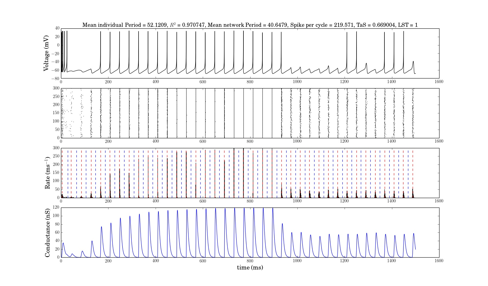

nrngui -nogui -python -isatty network.py -Istd=0 -Iapp=0.0005,4.5e-5 -gsyn=1e-7 -delay=1 -view -gui -tstop=5000 -c=299 -Vinit=-65

To use this scripts you need python libraries:
To run simulations the network of resonators:
For example, to replicate Figure 4 run:
nrngui -nogui -python network.py -Iapp=0.15e-5 -gsyn=3e-7 -nstart='(900.,0.21e-5,1000)' -Istd=0 -gui -view

or to replicate Figure 9C3 run:
nrngui -nogui -python network.py -Istd=0 -Iapp=0.2e-5 -gsyn=0.005e-5 -delay=1 -view -gui -tstop=5000 -F=1,0.1125 -c=299 -Vinit=-65 -sort=F
To run simulations the network of integrators:
For example, to replicate Figure 9C1 run:
nrngui -nogui -python -isatty network.py -Istd=0 -Iapp=0.0005,4.5e-5 -gsyn=1e-7 -delay=1 -view -gui -tstop=5000 -c=299 -Vinit=-65
and to replicate Figure 9C2 run:
nrngui -nogui -python -isatty network.py -Istd=0 -Iapp=0.0005,4.5e-5 -gsyn=1.25e-5 -delay=1 -view -gui -tstop=5000 -c=299 -Vinit=-65